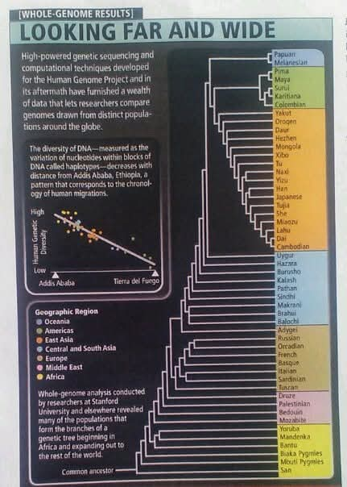

Kabut pagi masih menggantung tipis di kawasan Dago Atas, Kota Bandung. Udara dingin khas Priangan menusuk lembut menembus pori-pori, membawa aroma petrichor sisa hujan semalam yang berpadu dengan wangi biji kopi arabika panggang. Di sudut sebuah kedai kopi bergaya industrial yang dipenuhi tanaman rambat, tiga sahabat lama tengah merajut kembali diskusi rutin akhir pekan mereka.
Mereka bukan sekadar pemuda biasa yang menghabiskan waktu meratapi kemacetan kota. Mereka adalah tiga pemikir cerdas yang menjadikan Bandung sebagai kanvas intelektual mereka. Pertama adalah Risa, seorang peneliti bio-informatika di sebuah lembaga riset terkemuka di Bandung. Kacamatanya yang berbingkai bulat selalu membingkai mata yang memancarkan rasa ingin tahu yang tak berujung. Kedua adalah Bima, seorang ilmuwan data dan arsitek sistem cerdas yang memandang dunia melalui kacamata probabilitas dan algoritma. Dan yang ketiga, Arya, seorang sosiolog dan antropolog muda yang selalu berusaha mencari benang merah antara sejarah masa lalu dan perilaku masyarakat modern.
Pagi itu, suasana kedai cukup lengang. Hanya terdengar alunan musik jaz instrumental yang mengalun pelan dari pengeras suara di langit-langit. Risa menyeruput kopi tubruknya perlahan, lalu meletakkan cangkir keramik itu di atas meja kayu mahoni. Dari dalam tas ransel kanvasnya, ia mengeluarkan sebuah lembaran cetak berwarna yang tampaknya berasal dari sebuah jurnal sains bergengsi. Ia meratakan kertas itu di tengah meja, tepat di antara gelas kopi Bima dan piring croissant milik Arya.
"Kalian sudah melihat berita semalam?" tanya Risa, memecah keheningan. Nada suaranya terdengar serius, namun tetap tenang. "Lagi-lagi bentrokan berbau rasial meletus di belahan bumi lain. Dan ironisnya, riaknya terasa sampai ke media sosial kita di sini. Orang-orang saling menghujat, mengotak-ngotakkan diri berdasarkan warna kulit, bentuk mata, dan asal usul nenek moyang."
Bima memajukan posisi duduknya, menatap Risa dengan kening berkerut. "Algoritma media sosial memang merancang polarisasi semacam itu, Ris. Kebencian menghasilkan lebih banyak interaksi. Engagements. Klik. Pada akhirnya, itu semua hanya bisnis data. Tapi secara psikologis, manusia memang cenderung mencari kelompok atau tribenya sendiri, bukan?"
Arya mengangguk setuju dengan Bima. Sambil menyeka remah roti dari ujung bibirnya, ia menimpali, "Benar. Dari sudut pandang sosiologi evolusioner, manusia purba mengelompokkan diri untuk bertahan hidup dari ancaman alam dan predator. Mereka yang terlihat berbeda sering dianggap sebagai ancaman dari suku lain. Sayangnya, insting primitif itu terbawa sampai ke era modern yang sudah memiliki internet cepat dan kecerdasan buatan. Kita memanifestasikan ketakutan purba itu dalam bentuk rasisme terlembaga."
Risa tersenyum tipis, senyum yang selalu mendahului sebuah argumen ilmiah yang sulit dibantah. Jari telunjuknya yang ramping mengetuk pelan kertas yang baru saja ia keluarkan. "Itu sebabnya aku membawa ini. Aku menghabiskan seminggu terakhir mengumpulkan ulang data dari Human Genome Project dan beberapa riset pemetaan genom global terbaru."
Bima dan Arya menunduk, mengalihkan pandangan mereka pada lembaran di atas meja. Gambar itu menunjukkan sebuah grafik kompleks dengan latar belakang gelap. Di bagian atasnya tertulis huruf kapital: LOOKING FAR AND WIDE.

"Lihat bagian ini," Risa menunjuk ke grafik sebaran titik-titik (scatter plot) di kiri atas gambar. "Ini mengukur keragaman DNA manusia berdasarkan variasi nukleotida dalam blok-blok DNA yang kita sebut haplotipe. Sumbu horizontal menunjukkan jarak migrasi dari Addis Ababa, Ethiopia, hingga ke ujung dunia di Tierra del Fuego, Amerika Selatan. Sumbu vertikal adalah tingkat keragaman genetiknya."
Bima, dengan insting analis datanya yang tajam, langsung menangkap pola matematis dari grafik tersebut. "Korelasinya negatif linear. Semakin jauh jarak sebuah populasi dari Addis Ababa, keragaman genetiknya semakin menurun secara drastis. Titik tertingginya ada di Afrika."
"Tepat sekali, Bim!" seru Risa, matanya berbinar antusias. "Itulah jejak rekam pergerakan manusia yang dicatat oleh molekul-molekul terkecil di dalam sel kita. Ini adalah bukti matematis dan biologis dari teori Out of Africa."
Arya menyela dengan nada penuh minat. "Sebagai orang yang belajar antropologi, teori Out of Africa memang landasan kita. Sekitar enam puluh ribu tahun yang lalu, sekelompok kecil Homo sapiens meninggalkan benua Afrika. Karena yang pergi hanya sebagian kecil, mereka hanya membawa sebagian dari keragaman genetik yang ada di populasi asal. Ketika kelompok ini terus bermigrasi ke Asia, Eropa, hingga menyeberang ke Amerika, populasi yang terpecah lagi membawa keragaman genetik yang lebih sempit lagi. Fenomena efek pendiri atau founder effect."
"Betul," Risa melanjutkan. "Dan di grafik pohon di sebelah kanan ini, penelitian dari Stanford University memetakan akar kekerabatan seluruh populasi modern. Dari San dan Yoruba di Afrika bagian bawah, menjalar naik membentuk cabang-cabang ke Timur Tengah, Eropa, Asia, hingga ke suku Maya dan Karitiana di Amerika, serta Papuan Melanesian. Kita semua berasal dari leluhur yang sama."
Bima menyandarkan punggungnya ke kursi rotan. Ia melipat kedua tangannya di dada. "Oke, secara sejarah evolusi kita memang berasal dari akar yang sama. Tapi fakta di lapangan saat ini, kita memiliki perbedaan fisik yang nyata. Warna kulit yang berbeda, struktur wajah, resistensi terhadap penyakit tertentu. Bukankah perbedaan-perbedaan itulah yang sering diklasifikasikan orang sebagai 'ras'?"
Inilah momen yang ditunggu oleh Risa. Ia mencondongkan tubuhnya ke depan, menatap bergantian kedua sahabatnya. "Di sinilah ironi terbesarnya, teman-teman. Apakah kalian tahu hasil paling monumental dari pembacaan sekujur genom manusia oleh komunitas sains global?" Risa memberi jeda dramatis, membiarkan suara mesin espresso di latar belakang mengisi kekosongan. "Secara genetis, 99,9 persen sekuen DNA manusia di seluruh planet ini adalah sama persis. Identik."
Arya hampir tersedak kopi yang baru saja diteguknya. "Tunggu, maksudmu sembilan puluh sembilan koma sembilan persen? Antara aku, kamu, Bima, dan seorang pria di kutub utara sana?"
"Ya, Arya," jawab Risa mantap. "Seluruh perbedaan yang kita lihat, tinggi badan, bentuk hidung, warna mata, warna rambut, kerentanan terhadap penyakit genetik, hingga hal-hal yang sering dijadikan dasar diskriminasi rasial... semua itu hanya bersumber dari fraksi yang sangat kecil: sekitar 0,1 persen saja dari keseluruhan DNA kita."
Bima terdiam. Otak komputasionalnya sedang memproses angka tersebut. "Satu per seribu. Jika genom manusia memiliki sekitar tiga miliar pasangan basa DNA, berarti perbedaan antar dua manusia mana pun di dunia ini hanya sekitar tiga juta pasangan basa. Dalam skala pemrograman, itu seperti memiliki dua sistem operasi raksasa yang kode sumbernya sama persis, dan hanya berbeda pada beberapa baris kode konfigurasi interface penggunanya saja."
"Analogi yang sangat akurat," puji Risa. "Perbedaan 0,1 persen itu didominasi oleh apa yang kami sebut sebagai Single Nucleotide Polymorphisms atau SNP. Ini adalah variasi di mana satu huruf dalam kode DNA kita, misalnya A berubah menjadi G. Dan yang lebih mengejutkan lagi, sebagian besar dari variasi 0,1 persen itu justru ditemukan di dalam kelompok populasi yang sama, bukan antar populasi yang berbeda."
Arya mengerutkan keningnya, mencoba memahami konsep tersebut. "Bisa kau sederhanakan, Ris? Apa maksudnya variasi ada di dalam kelompok yang sama?"
"Maksudnya begini," Risa menjelaskan dengan sabar, mengilustrasikannya dengan menggeser dua cangkir kopi dan satu piring roti. "Bayangkan kita mengambil dua orang secara acak dari sebuah desa di Swedia, Eropa. Lalu kita ambil satu orang dari sebuah desa di Korea, Asia. Secara genetis, ada kemungkinan salah satu dari orang Swedia tersebut memiliki kesamaan DNA yang lebih dekat dengan orang Korea tadi dibandingkan dengan tetangganya sendiri di desa Swedia. Perbedaan genetik antara individu di dalam ras yang sama seringkali lebih besar daripada rata-rata perbedaan antar ras itu sendiri."
Bima menggelengkan kepalanya perlahan, seolah baru saja disadarkan dari ilusi panjang. "Ini benar-benar mendisrupsi cara pandang konvensional. Jika secara biologis perbedaannya sebegitu kecilnya, dan batas antar kelompok begitu bias, maka konsep ras itu..."
"Konsep ras tidak memiliki dasar biologis yang kuat," potong Arya, mengambil kesimpulan sosiologis dari data sains yang dipaparkan Risa. "Ras adalah konstruksi sosial. Sebuah ilusi yang diciptakan oleh masyarakat masa lalu, dipertahankan oleh sejarah kolonialisme, politik kekuasaan, dan sistem kelas, lalu diwariskan dari generasi ke generasi hingga kita mempercayainya sebagai kebenaran biologis mutlak."
Ketiga sahabat itu terdiam sejenak. Angin sejuk Bandung berhembus masuk melalui jendela kedai yang terbuka, membawa kesejukan yang seakan menjernihkan pikiran mereka. Di luar sana, jalanan Dago mulai ramai oleh kendaraan bermotor, mahasiswa yang bergegas menuju kampus, dan pedagang kaki lima yang menjajakan dagangannya. Semuanya terlihat berbeda secara kasat mata, namun kini, di mata mereka bertiga, lautan manusia di luar sana tampak sebagai satu kesatuan yang terikat oleh rantai kode kehidupan yang sama.
"Lalu, mengapa warna kulit kita bisa berbeda jika DNA kita 99,9 persen sama?" tanya Bima, sekadar ingin menguji pemahaman Risa lebih jauh.
Risa mengambil sepotong croissant milik Arya dengan izin isyarat, lalu mengunyahnya pelan sebelum menjawab. "Itu murni adaptasi lingkungan yang berevolusi dengan sangat cepat. Ketika leluhur kita bermigrasi dari Afrika yang terpapar sinar matahari khatulistiwa menuju wilayah utara seperti Eropa dan Asia yang lebih dingin dan minim sinar matahari, tubuh mereka harus beradaptasi. Kulit gelap yang kaya melanin sangat bagus untuk melindungi tubuh dari kerusakan akibat radiasi UV di daerah tropis. Tapi melanin juga menghalangi produksi vitamin D yang bergantung pada sinar matahari."
Risa melanjutkan penjelasannya bak seorang dosen yang menguasai panggung kelasnya. "Di belahan bumi utara, mereka yang berkulit gelap mengalami defisiensi vitamin D, yang menyebabkan masalah tulang dan reproduksi. Alam menyeleksi mutasi genetik yang menghasilkan kulit lebih terang—mengurangi melanin—sehingga tubuh tetap bisa memproduksi vitamin D meski sinar matahari sedikit. Mutasi-mutasi pada gen seperti SLC24A5 dan MC1R inilah yang bertanggung jawab atas pigmentasi. Ini hanya soal regulasi beberapa gen spesifik dari puluhan ribu gen yang kita miliki. Sesuatu yang murni mekanistik, tidak ada hubungannya dengan tingkat kecerdasan, moralitas, atau kedudukan sebagai manusia."
Arya tersenyum lebar. "Jadi, rasisme pada dasarnya adalah membenci seseorang hanya karena nenek moyangnya kebetulan beradaptasi terhadap intensitas sinar matahari yang berbeda. Betapa absurdnya kebencian manusia jika dibedah dengan sains."
"Itulah tragedi terbesar peradaban kita," sahut Bima sambil membuka laptopnya, layar berpendar memantulkan cahaya di wajahnya. "Kita membangun senjata pemusnah massal, menciptakan kebijakan apartheid, melakukan genosida, dan saling menghina di internet hanya karena perbedaan 0,1 persen. Jika saja data sains ini bisa diubah menjadi empati masal. Sayangnya, data saja jarang bisa merubah emosi manusia."
"Mungkin itu tugas kita," kata Risa lembut namun tegas. Ia menatap lekat pada gambar pohon filogenetik di atas meja. Garis-garis yang menghubungkan semua populasi dunia berpusat pada satu titik di bagian bawah: 'Common Ancestor'. Leluhur bersama. "Sebagai ilmuwan, sosiolog, dan teknolog, kita tidak boleh hanya duduk diam di menara gading. Kita harus menceritakan kisah ini. Kisah bahwa di dalam setiap helai rambut, di dalam setiap tetes darah, dan di dalam setiap sel kulit manusia mana pun di bumi ini, terukir sandi persaudaraan yang tak bisa dibantah oleh dogma politik apa pun."
Matahari mulai merangkak naik, mengusir sisa-sisa kabut di langit Bandung. Cahaya keemasan menerobos dedaunan rimbun, melukis bayangan abstrak di atas meja kayu mereka. Diskusi yang awalnya dipicu oleh berita muram tentang konflik rasial kini bertransformasi menjadi pencerahan yang membangkitkan harapan.
Arya mengangkat cangkir kopinya yang tinggal separuh. "Mari kita bersulang untuk 99,9 persen yang menyatukan kita, dan mari kita rayakan 0,1 persen yang membuat dunia ini tidak membosankan."
Risa dan Bima tertawa pelan, lalu ikut mengangkat cangkir mereka. Bunyi dentingan keramik beradu pelan menjadi simfoni kecil di sudut kedai itu. Tiga pemikir cerdas dari Bandung itu menemukan sebuah harmoni, bukan dari kesamaan cara pandang mereka terhadap ilmu pengetahuan, melainkan dari kesadaran mendalam bahwa pada akhirnya, seluruh umat manusia hanyalah satu keluarga besar yang sedang melakukan perjalanan panjang menembus ruang dan waktu.
Dan di bawah langit Bandung yang semakin biru, rahasia kode kehidupan itu telah mengungkap kebenaran yang paling murni: bahwa kita semua bersaudara. Semua manusia pada dasarnya berkerabat.